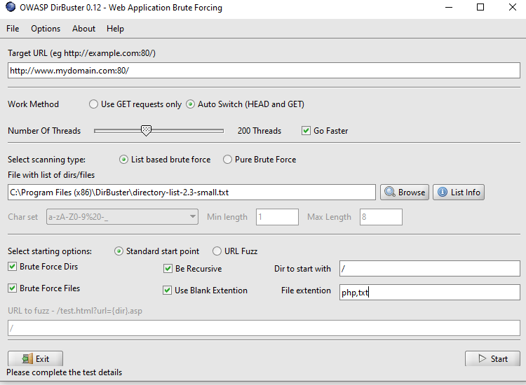

DIRB
dirb http://mydomain.com
Gobuster
gobuster dir -u http://$ip/ -w /usr/share/seclists/Discovery/Web_Content/common.txt -s '200,204,301,302,307,403,500' -e
DirBuster:
recommended change user-agent in advanced option
for reduce scan time you can disable recursive mode and choose small file if not found someting critical choose meduim file
